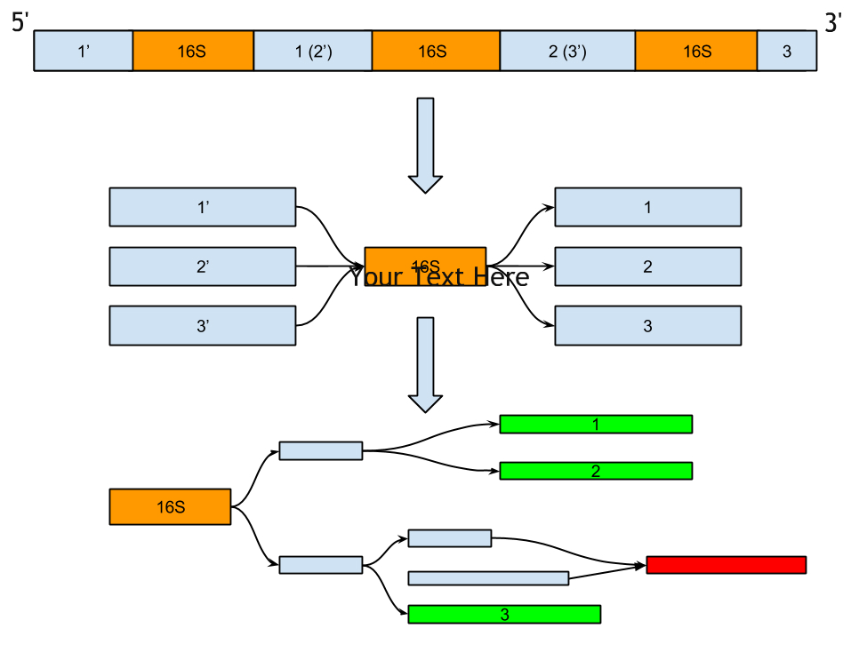
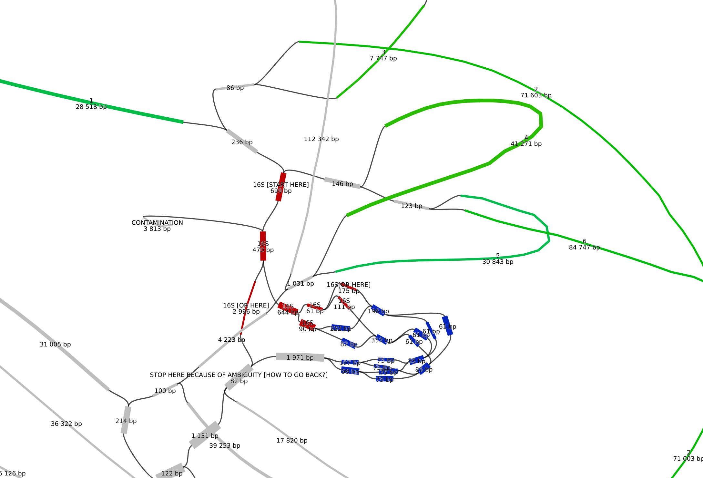

Metagenomic assembly and annotation of 16S ribosomal RNA genes by SPAdes
Scientific advisors:
Sergey Nurk and Anton Korobeynikov, Center For Algorithmic Biotechnology SPbSU
Why 16S rRNA genes are useful?
16S rRNA genes are very important in reconstructing phylogenies due to slow evolution rates of their regions

16S rRNA genes sequencing
- Target approach allows to selectively capture genomic regions of interest from DNA sample;
- Whole metagenome approach provides sequencing information about the whole sample.
Direction I. Collaboration with JGI
- Source: Natalia Ivanova group from Joint Genomic Institute which studies very specific metagenomic datasets;
- Detection of unusual biology across different domains;
- Target sequencing lacks sensivity but there is a need to get full-length 16S rRNA genes;
- Additional challenge: necessity to get a genome information about the corresponding unusual group.
Tasks
- Comparison of MetaSPAdes de novo and custom JGI pipeline assemblies.
- Contigs binning to 16S rRNA via SPAdes assembly graph;
Quantitative comparison of
assembled 16S rRNA sequences
| Assembled by JGI custom pipeline | Covered by MetaSPAdes contigs |
|---|---|
| 1679 | 1368* |
*Covered at least 80% of sequence. 1/5 missed 16S rRNA sequences have length less than 100 bp.
Correspondence between 16S rRNA in the genome and in the assembly graph
Bioinformatics reality
 https://github.com/rrwick/BandageDetecting long contigs on isolates datasets
| Isolated organism | Long contigs* found |
|---|---|
| Some bacteria | ~80% |
*Aka corresponding information about an unusual group
Direction II. Work in progress
Assembly of full-length 16S rRNA genes via MetaSPAdes
Simple case of assembly
When 16S rRNA is in a contig then one can easily detect it using the following tools:
- Barrnap (based on NHMMER) makes use of the primary structure conservation;
- Infernal (based on Covariance Models) takes into account both primary and secondary structures.
Assembly of 16S rRNA genes on isolates
| 16S rRNA copies in a Bacterial genome | Assembled by SPAdes |
|---|---|
| 2-15 | 1+* |
*This number depends on available sequencing information (mate-pair, PacBio reads, etc.)
Issue: local similarity of different 16S rRNA genes
(from 0.06% to 20.38%; 0.55% ± 1.46%)
Ideas about how to improve de novo assembly
- Use databases (Rfam, Greengenes) of known RNA families to add an information to the assembly graph.
- Use information about both 16S rRNA primary and secondary structures (existing tool: Reago);
Task
Implement these ideas in MetaSPAdes.
THANK YOU! QUESTIONS?
Hofstadter's Law: It always takes longer than you expect, even when you take into account Hofstadter's Law.